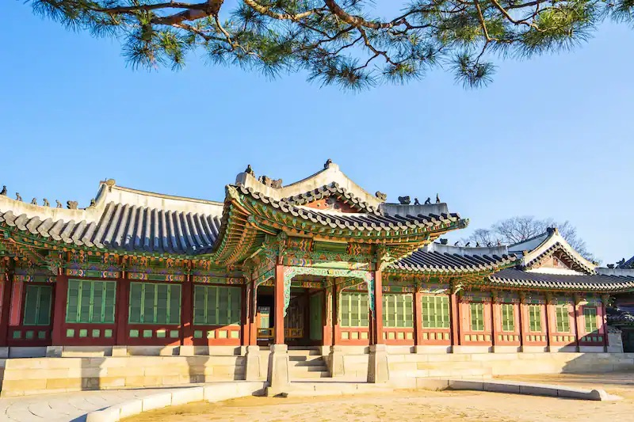
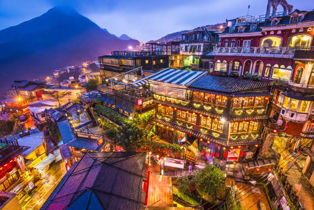
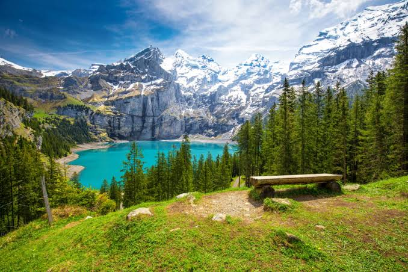
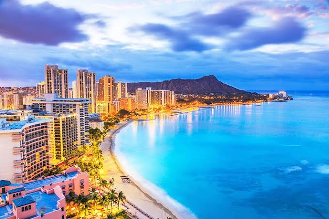
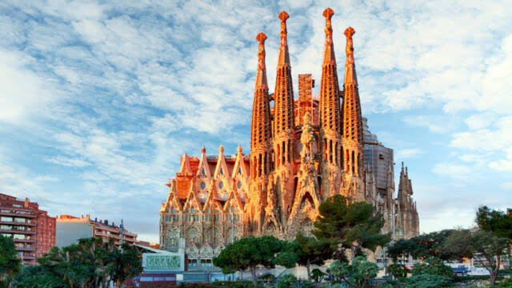
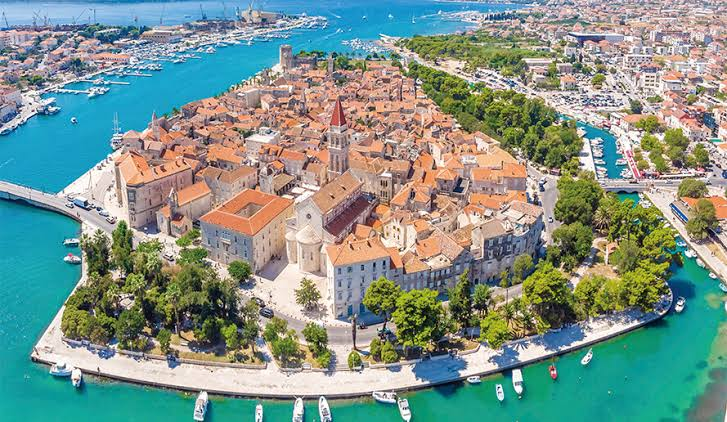
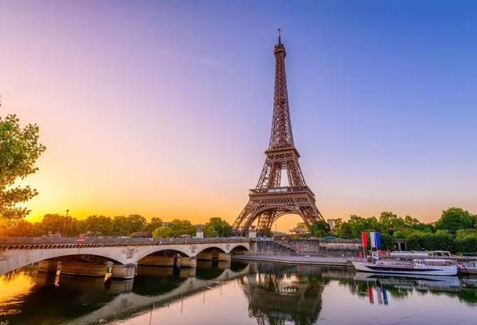
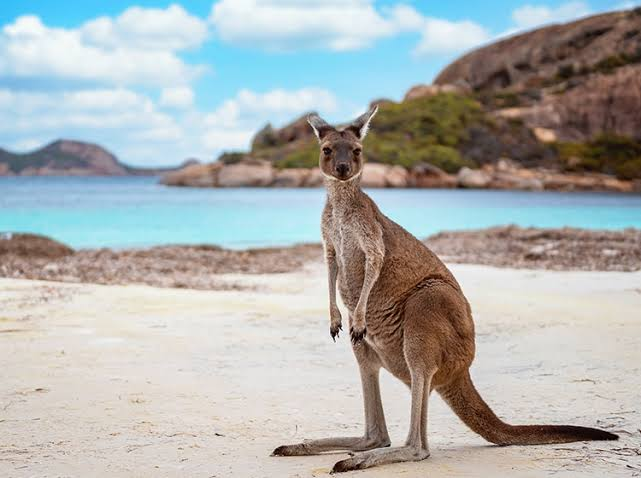
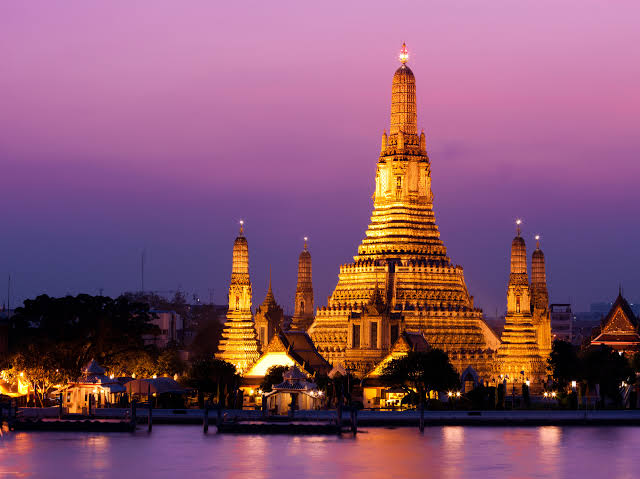
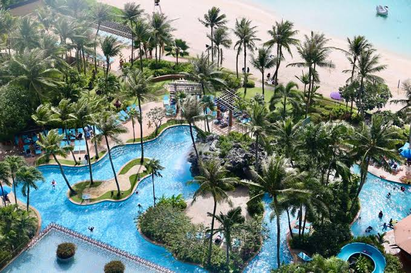

2023年絶対に行きたい国ランキング
-
【第1位】韓国🇰🇷
韓国旅行の魅力は、「美食の楽しみ」です。韓国は世界的に有名な食の宝庫であり、多彩で美味しい料理が楽しめます。キムチやビビンバ、プルコギをはじめ、豊富な種類の韓国料理やストリートフードがあります。また、韓国料理以外にも、カフェ文化や韓国のスイーツも人気です。韓国旅行では、食べ歩きやレストランでのグルメ体験を通じて、韓国ならではの独特な味覚を楽しむことができます。食べ物が持つ魅力は、韓国旅行をさらに特別なものにしてくれます。
韓国旅行の予約はこちら -
【第2位】台湾🇹🇼
台湾旅行の魅力は、「食文化の宝庫」という点です。台湾は美味しい食べ物が豊富で、台湾料理やストリートフード、新鮮なシーフード、デザートなど、バラエティに富んだ食の楽しみがあります。台湾旅行では、食べ歩きや夜市でのグルメ体験を通じて、台湾ならではの美味しい料理に舌鼓を打つことができます。
-
【第3位】スイス🇨🇭
スイス旅行の魅力は、「壮大な自然の景観」という点です。スイスはアルプス山脈に囲まれた美しい国であり、雄大な山々、清らかな湖、滝、緑豊かな草原など、自然の風景が素晴らしいです。ハイキングやスキー、山岳登山、湖畔でのリラックスなど、自然を満喫する様々なアクティビティが楽しめます。スイスの風景は絵画のように美しく、旅行者にとって圧倒的な感動を与えることでしょう。
-
【第4位】ハワイ🇺🇸
ハワイ旅行の魅力は、「極上のビーチ体験」という点です。ハワイは美しい砂浜とクリアな海が広がり、世界的に有名なビーチリゾート地です。エメラルドグリーンやターコイズブルーの海、穏やかな波、白い砂浜が特徴で、シュノーケリングやサーフィン、カヤックなどのウォータースポーツを楽しむことができます。ビーチでのんびりと過ごしたり、夕日を眺めながらロマンチックなひとときを過ごしたりすることで、心身ともにリフレッシュできるハワイならではのビーチ体験が待っています。
-
【第5位】スペイン🇪🇸
スペイン旅行の魅力は、「豊かな文化と歴史の体験」です。スペインは古代のローマ遺跡や中世の城塞、ゴシックやムーア様式の建築物など、歴史的な遺産が数多く存在します。また、有名な芸術家たちによる美術館や美しい庭園も豊富にあります。さらに、スペインは伝統的な祭りや民俗行事の豊かな国でもあり、地域ごとに異なる文化や習慣を体験することができます。スペイン旅行では、歴史や文化に触れながら、魅力的な場所を巡ることで、独特な体験と思い出を作ることができます。
-
【第6位】クロアチア🇭🇷
クロアチア旅行の魅力は、「美しい海と海岸の魅力」です。クロアチアはアドリア海に面し、美しい海岸線が広がっています。クリスタルクリアな水と岩場や砂浜の美しいビーチが特徴で、夏には海水浴や水上スポーツが楽しめます。特にドブロヴニクやスプリトなどの都市には、歴史的な建造物や要塞が海岸線に沿って美しく広がっており、その風景はまさに絵画のようです。クロアチア旅行では、美しい海と海岸の景観を楽しみながら、リラックスした時間を過ごすことができます。
-
【第7位】フランス🇫🇷
フランス旅行の魅力は数多くありますが、一つ挙げるとすれば、「芸術と文化の宝庫」という点です。フランスは世界的に有名な美術館や文化施設が集まる国であり、歴史的な建築物や美しい庭園も豊富にあります。パリのルーヴル美術館やオルセー美術館、ヴェルサイユ宮殿など、数々の芸術的な名所があります。また、フランスは文学や音楽、映画などの分野でも世界的な影響力を持ち、アーティスティックな体験を楽しむことができます。フランス旅行では、芸術に触れながら歴史や文化を感じ、美しい作品や建築物に囲まれた環境で心豊かな時間を過ごすことができます。
-
【第8位】オーストラリア🇦🇺
オーストラリア旅行の魅力は、「壮大な自然の美しさ」という点です。オーストラリアは広大な国土に広がる多様な自然環境が魅力で、美しい海岸線、広大な砂漠、豊かな雨林、壮大な山々など、さまざまな風景が楽しめます。グレート・バリアリーフやウルル（エアーズロック）、グレートオーシャンロードなど、世界的に有名な自然の名所も多くあります。また、ワイルドライフにも恵まれており、カンガルーやコアラ、ワラビーなど、独特な動物たちと触れ合うこともできます。オーストラリア旅行では、壮大な自然の美しさを感じながら、アウトドアアクティビティや自然探索を楽しむことができます。
-
【第9位】タイ🇹🇭
タイ旅行の魅力は、「美味しい食文化」という点です。タイは世界的に有名な料理の宝庫であり、辛さと香辛料を巧みに使ったタイ料理が魅力です。トムヤムクンやグリーンカレー、パッタイなど、独特の風味とバランスの取れた味わいが特徴的です。また、ストリートフードも充実しており、バンコクの屋台やナイトマーケットでさまざまなおいしい料理を楽しむことができます。タイの食文化は多様で、農産物や新鮮なシーフードを活かした料理も豊富です。タイ旅行では、美味しい食事を楽しみながら、現地の文化や風習を体験することができます。
-
【第10位】グアム🇬🇺
グアム旅行の魅力は、「美しいビーチとリゾート体験」という点です。グアムは美しいサンドビーチとクリアな海を備えたリゾート島であり、多くの観光客がその魅力に惹かれて訪れます。グアムのビーチでは、美しいサンセットや青い海に囲まれながらリラックスした時間を過ごすことができます。また、リゾート施設やホテルも充実しており、プールやスパ、レストランなどの設備を楽しむこともできます。グアム旅行では、快適なリゾート環境でリフレッシュし、海水浴やマリンスポーツを楽しむことができます。